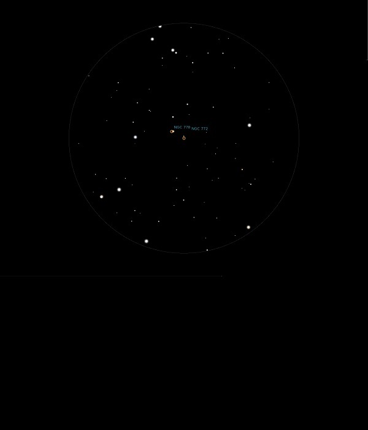

NGC 772
Spiral
Galaxy in Aries
NGC 772
Mag 11.1
Arp 78
21/09/14
Very faint but quite large Galaxy, hunted down on the way to
M74 in Pisces
07/01/16
Very faint misty blur in 12mm sitting neatly between two stars
just in the FOV with NGC 772 in the middle, the brightest
being HIP 9379 at Mag 9.05 and the other at Mag 9.55
In 12mm there is a hint that it is quite large although no
feel of any structure, and in 18mm almost reaches two stars of
Mags 11.1 and 11.3 with both just off centre in the FOV
However, no sign of the Mag 14 Galaxy NGC 770 with which it is
tidally interacting